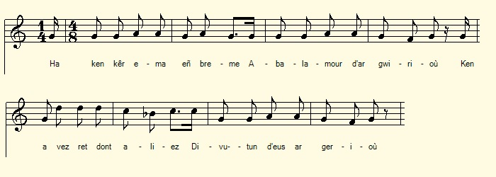

Son ar Gwirioù
La chanson des taxes
The Song of Taxes
Chant collecté par Théodore Hersart de La Villemarqué
dans le 2ème Carnet de Keransquer (pp. 71 & 74).
dans le 2ème Carnet de Keransquer (pp. 71 & 74).

Mélodie
Arrangement Christian Souchon (c) 2019
|
A propos de la mélodie Inconnue. Remplacée à titre d'illustration par "Ar Mezvier" (L'ivrogne), air du Trégor, noté sous le N° 389, p. 198 des "Musiques Bretonnes" de Maurice Duhammel, publiées en 1913. Il était chanté par Marie-Jeanne Le Puil de Port-Blanc. A propos du texte Noté dans son carnet N°2 en 1841, pages 71 et 74, à la suite du chant "Le monstre d'une part et du chant "Bonaventure et les chauffeurs" qui occupe les pages 72 et 73, d'autre part, ce chant satirique est dirigé contre les taxes sur le sel et le tabac en vigueur sous la monarchie de Juillet. Il peut avoir inspiré les strophes 12 à 18 du Temps passé, c'est à dire le passage consacré à ce thème chanté par le second meunier. |
About the tune Unknown. Replaced for illustration by "Ar Mezvier" (The drunkard), air of Trégor, noted under No. 389, p. 198, in "Breton Music" by Maurice Duhammel, published in 1913. It was sung by Marie-Jeanne Le Puil of Port-Blanc. About the lyrics: Noted in his notebook N ° 2 in 1841, pages 71 and 74, following the song "The monster" on the one hand and the song" Bonaventure and the stokers" which occupies the pages 72 and 73, on the other hand. This satirical song is directed against the taxes on salt and tobacco in force under the Monarchy of July. It may have inspired the stanzas 12 to 18 of In Olden Times, ie the passage dedicated to this theme sung by the second Miller.. |
|
BREZHONEK p. 71 [Son ar Gwirioù] [a] 1. ... Mont da glask butun e kerioù, Teir, peder lev achane. [1] 2. Ha ken ker ema-eñ breman Abalamour d'ar gwirioù Ken a vez ret dont aliez Divutun d'eus ar gerioù [au crayon: Amzer gwechall pa oan yaouank Me oa dimet, un ael azur a zeu o nij] [1] [b] [En marge gauche verticalement.] 3. Ha setu, setu m'am-boa, Delioù butun, splann digoret, Ha sortiet ar wec'h d'eus he yalc'h, Ha taolet er forn goret [3] (2) 4. P'eo e-mesk (gant) hon daeroù red a vo Deomp prestik trempañ hor soubenn, (Red a vo deomp gant hon daeroù Bremaik salañ hor soubenn) O distro d'eus arvor 'vit ober, Gwirioù vo war an holen, 5. Me gave din a greas Doue Ar mor bras evid an holl, Evel ar glouiz eus an neñv, Evel an aer hag an heol, 6. Evel an heol hag an aer, Oh, ya en amzer gwechall, Rak bremaik a vo red (bremañ ez eo red) Paeañ 'vit tennañ hoc'h anal; 7. Paeañ, evit gwelet an den E-barzh en o zietegezh, Pe a-hend-all, dindan an douar, Kevell e-giz loened gouez, 8. Me gave din e c'hreas Doue Louzoù (vad) e-leizh er maezioù-ni. Evit d'ar mab a gredfe poan, D'o hadañ, ha d'o konduiñ ! p. 74 V.p. 2. 8 bis. Deut-c'hwi ha ganimp, Kristenien, Ni ho lako tan d'evañ Deut-chwi ganeomp-ni, ni rey dezho [?] Tan d'evañ, Kristenien [1] _______________________ (3) p3 9. Me gave din, a voa kreet, Ma Doue, ar paper gwenn Evit ma hello merkañ Ho añv, Mab den a oar hag hen lenn. 10. Ha breman a verker ennañ tri ger espar hag en du, D' an neb a gemer hag a lenn, a riñte e yalc'h dioc'htu. 11. En em glev paotred ar gwirioù: "Tan, etre, ha butun, tan-etre ha paperioù" [=Liberté, Egalité, Fratenité?] [2] [c] [En marge à droite, verticalement] 12. Pa teuyo goueliet gant an avelioù Ni lakay ur c'hornad butun, dibres, KLT gant Christian Souchon |
TRADUCTION FRANCAISE p. 71 [Chanson des taxes] [a] 1. ...A trois ou quatre lieues d'ici Acheter le tabac en ville 2. Mais s'il est si cher à présent C'est surtout à cause des taxes. Et l'on en revient bien souvent Sans tabac. C'est un vrai désastre! [au crayon: Au temps jadis quand j'étais jeune Marié, un ange bleu volait...] [b] [En marge gauche verticalement.] 3. Des brins de tabac épanouis, J'en eus jadis, ne vous déplaise. De leur bourse une fois sortis, Je les brûlais dans la fournaise. (2) 4. C'est bientôt dans nos pleurs amers Qu'il faudra tremper notre soupe, (Cest avec nos larmes bientôt Qu'il nous faudra saler la soupe) Et à quoi bon longer la mer? Les droits sur le sel nous étouffent, 5. Moi qui croyais que l'Eternel Fit l'océan pour tous sur terre, Tout comme la rosée du ciel, L'air, le soleil qui nous éclaire, 6. Comme le soleil ou bien l'air. C'était vrai jadis. Quoi de pire Que, bientôt, quelque impôt pervers (maintenant il faut) Sur l'air même que l'on respire; 7. Payer pour que tout un chacun Se terre dans sa maisonnée, Et que la tombe l'ait enfin, Tel la bête fauve traquée , 8. Le bon Dieu créa, disait-on, Des plantes (bonnes herbes) tout plein nos campagnes, Pour qu'à la sueur de leur front Ses fils les sèment et les soignent! p. 74 V.p. 2. 8 bis. Chrétiens, à ceux qui nous rejoignent Nous leur ferons boire du feu Faisant, à ceux qui nous rejoignent [?] A tous, Chrétiens, boire du feu _______________________ (3) p3 9. Je croyais qu'on avait créé, Pour que Votre nom l'on inscrive, Mon Dieu, le papier blanc exprès, Et que ceux qui savent le lisent 10. On y voit, écrits noir sur blanc, Trois mots que sépare un espace, Pour que le lecteur qui le prend, Puise dans sa bourse avec grâce. 11. Agents des impôts, ces mots c'est: "Feu tant au tabac qu'aux papiers!" [=Liberté, Egalité, Fratenité?] [c] [En marge à droite, verticalement] Tel la voile qui claque au vent Quand le papier Chacun tire sur son séant. Sans hâte, à son tour, sa pipée, Traduction: Christian Souchon (c) 2019 |
ENGLISH TRANSLATION p. 71 [The Song of taxes] [a] 1. ...Three or four leagues you have to go You buy in town your tobacco 2. Which has become so high in price Without money and half stranded We must go home, empty-handed Because of taxes and excise. [in pencil: "In olden days, a young husband I saw. blue angels in thousands..."] [b] [Left margin vertically.] 3. The tobacco leaves they were such Great pleasure to me, such solace, When I took them out of the pouch And burned them in the pipe's furnace. (2) 4. 'T will be soon in our bitter tears We'll have to soak our slice of bread, (It is with our salted tears soon That we'll have to season our soup) To us, seaside dwellers for years, Salt taxes have been such a dread, 5. Yet I had believed that the Lord Had made the sea for all on earth, Like morning dew, all can afford. That of air and sun there's no dearth, 6. No tax on sunlight or on air There used to be. The taxmen seethe: That we paid rights would be but fair On the very air that we breathe; 7. They want all beings on earth to pay For crouching in their own sweet dens, Till to the grave they're put away Life having made wild beasts of them, 8. God created, it has been said, Plants (good herbs) to provide you a square meal, In the sweat of your face your bread You should eat, aye, that was the deal! p. 74 V. P. 2. 8 bis. For we will make them all drink fire, Christians, all those who have joined us Aye, we will make them all drink fire We will make all those who joined us [?] All of them, Christians, will drink fire _______________________ (3) p3 9. I thought that You had created, My God, white paper on purpose. So that Your name, there inscribed, To such as can read, be disclosed, 10. But on it are written henceforth, Black on white, three unheard-of words: Whoever reads them sees his purse Cleaned out by the spell of this curse. 11. Now the words that I mean read so: "Fire and paper and tobacco!" [= Liberty, Equality, Fraternity?] [c] [Right margin, vertically] 12. Away in smoke drifts the paper, Like a sailing ship the wind swipes: Sitting on your posteriors. Take in turn a puff on your pipes! Translation: Christian Souchon (c) 2020 |
NOTES:
|
[1] Structure du poème Ce poème apparaît aux pages 71 et 74 du carnet sur 6 plages repèrées par le collecteur par les indices (2], Vp2 et (3)p3 sur le manuscrit, complétés ici par trois autres repères, [a],[b] et [c]. L'ordre de présentation retenu, [a] [b] (2] Vp2 (3)p3 [c], n'est peut-être pas le plus satisfaisant (cf. illustration ci-dessous): [2] "L'allume-pipe" Peut-être les trois mots inouis en question, rendus par l'énigmatique "Tan-etre, ha butun, tan-etre ha paperioù" sont-ils la devise de la République, "Liberté, Egalité, Fraternité" qui figuraient en tête de nombreux imprimés officiels. Le papier imprimé était jusqu'ici réservé aux Saintes écritures et autres ouvrages de piété. Les droits sur le tabac remontent à 1629 et l'origine des droits sur le sel se pert dans la nuit des temps. La vente du sel était devenue un monopole d'état dès 1343. La gabelle avait été abolie par l'Assemblée constituante, le 1er décembre 1790, mais rétablie par Napoléon Ier en 1806. Quand le chant fut noté par La Villemarqué, en 1841, la Monarchie de Juillet continuait d'appliquer des droits sur le tabac et sur le sel, La chanson recommande, d'utiliser en guise d'allume-pipe un formulaire fiscal. La sentence en marge notée verticalement [c], pourrait être la conclusion de cet édifiant poème: voir la propagande républicaine partir en fumée est un plaisir qu'on doit savourer sans précipitation et collectivement! [3] Taolet er forn goret "Je les jetais dans le four chauffé". Il s'agit donc de tabac à fumer. Le tabac à fumer et à priser était vendu autrefois sous forme de petits rouleaux qu'il fallait raper aux extrémités pour le consommer. Cela donnait aux rouleaux la forme caractéristique de "carottes" que l'on retrouve dans les enseignes de buralistes (qui ont également adopté la couleur de ce légume). | .
[1] Structure of the poem This poem is recorded on pages 71 and 74 of notebook N°2 on 6 "patches" tagged by the collector as "(2)", "Vp2" and "(3) p3" on the manuscript, supplemented here by three other marks: "[a]", "[b]" and "[ c]" The order chosen, [a] [b] (2) Vp2 (3) p3 [c], may not be the most satisfactory (see below picture): [2] "The lighter" Perhaps the three "unheard-of words" in question, rendered by the enigmatic phrase "Tan-etre ha butun, tan-etre ha paperioù" are the motto of the French Republic, "Liberty, Equality, Fraternity", printed at the top of many official forms. Paper was hitherto mostly reserved for the Holy Scriptures and other works of piety. The tobacco taxes date back to 1629 and the origin of the salt taxes is lost in the mists of time. Salt trading had become a state monopoly in 1343. The so-called "gabelle" was abolished by the Constituent Assembly, December 1, 1790, but restored by Napoleon I in 1806. When the song was noted by La Villemarqué in 1841, the July Monarchy was still applying duties on tobacco and salt. The song recommends to use a tax form as a pipe lighter. The vertical margin note [c], could be the conclusion of this edifying poem: Making Republican propaganda go up in smoke is a pleasure that should be savoured without haste and collectively! [3] "Taolet er forn goret" "I threw them into the heated oven". The song is therefore about smoking tobacco. Smoking and snuff tobacco was formerly sold in the form of small rolls which had to be tapped at the ends to be consumed. This gave the rolls the characteristic shape of "carrots" found in French tobacconists' signs (which also adopted the colour of the-said vegetable). |